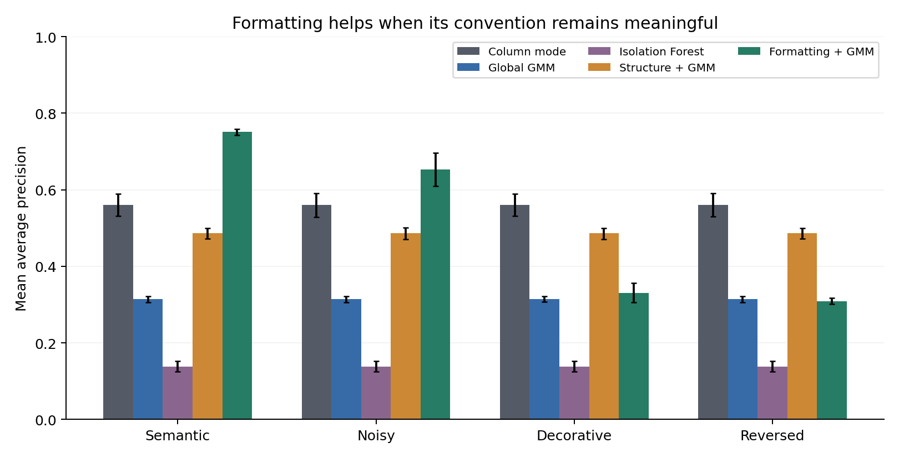

Gaussian Mixture Models and Formatting-Aware Statistical Methods for Auditing Linked Excel Spreadsheets
Research manuscript in dissertation format
Concept and research direction: Michael Emanuel Glover
Manuscript, implementation, and computational analysis: developed with Codex
Publication: HRL Portfolio, 3 October 2026
This manuscript develops a substantive spreadsheet-auditing method and reports experiments executed for this publication. Its empirical evidence is synthetic. It has not been submitted to a university, examined by a dissertation committee, or awarded a degree. No institutional affiliation is asserted.
Abstract
Large spreadsheets combine executable formulas, linked tables, numerical measurements, and visual conventions. An auditor who examines only values can miss structural defects; an auditor who examines only formulas can overlook numerical anomalies; an auditor who treats every fill color as a semantic label can mistake decoration for evidence. This manuscript develops an architecture in which numerical and structural features are modeled by a regularized Gaussian mixture, formula signatures receive categorical models, and style-conditioned signatures contribute an optional contextual score. Dependency graphs support impact analysis and constrain the interpretation of candidate repairs.
A reproducible benchmark generates eight clean training workbooks and twelve held-out content realizations under four paired formatting conditions, producing 48 test workbook files. Each test ledger contains 1,080 scored cells and 24 injected defects. Five methods are evaluated using average precision, AUROC, and inspection-budget precision and recall. Under stable semantic formatting, the formatting-aware mixture obtains mean average precision 0.751, versus 0.560 for a simple column-mode rule and 0.314 for a global Gaussian mixture. However, at a 54-cell inspection budget, the global mixture and column rule recover more defects than the formatting-aware method. Decorative and reversed formatting reduce its average precision to 0.330 and 0.309 respectively.
The contribution is an inspectable experimental framework and a conditional result: formatting can improve audit ranking when its convention is trustworthy, but its usefulness does not establish universal superiority, calibrated defect probabilities, or successful automated repair. Reinforcement learning is formulated as a future sequential audit comparison; no unexecuted reinforcement-learning advantage is claimed.
Contents
- Problem, scope, and research questions
- Related work and contribution boundary
- Workbook representation and semantic ambiguity
- Gaussian mixtures and categorical context
- Dependency graphs, repair constraints, and optimization
- Executed experimental design
- Results and error analysis
- Reinforcement learning as a sequential comparison
- Deployment and human review
- Threats to validity
- Conclusions and research agenda
- References and reproducibility appendix
1. Problem, scope, and research questions
A spreadsheet is simultaneously a program, a database, and a visual interface. Consider a ledger in which quantity and price determine gross value, adjustment modifies gross value, net values accumulate into a running total, and a summary sheet aggregates the net column. A formula can remain syntactically legal while pointing to the preceding row. A computed value can be replaced by a numerically identical constant. An input can be multiplied by an erroneous scale factor. None of these necessarily produces an Excel error token.
Visual conventions add another layer. A green fill may designate a multiplication-derived amount, while blue marks a net calculation. That distinction is useful only if it is actually maintained. A template copied from another team can reverse the convention. Alternating colors can be purely decorative. A single color can carry different meanings in different sheets. Consequently, interpreting formatting requires a declared context rather than a global color dictionary.
The central research question is: under what conditions does incorporating formatting improve the prioritization of suspected spreadsheet defects beyond simpler structural and numerical methods? Three subordinate questions make the claim testable. First, does a mixture model outperform a simple column regularity rule? Second, how does performance change when formatting becomes noisy or changes meaning? Third, does a better overall ranking also yield better defect recovery at a fixed review budget?
The implemented task is defect ranking, not complete semantic verification. The system assigns scores to cells for review. It does not certify that a workbook is correct, infer undocumented accounting policy, calculate taxes, or replace a qualified reviewer. The defects evaluated here are deliberately generated and precisely labeled. They supply controlled evidence about the methods without supplying evidence about any particular organization's workbooks.
The term optimization has two meanings in this manuscript. Statistical optimization fits model parameters. Operational optimization allocates limited inspection effort and, in the proposed extension, schedules candidate repairs. Recalculation optimization is addressed through dependency analysis, but actual Excel recalculation speedups are not measured. Distinguishing these objectives prevents an improvement in anomaly ranking from being reported as an improvement in every aspect of spreadsheet performance.
2. Related work and contribution boundary
ExceLint analyzes unusual formula structure relative to spreadsheet regions [1]. Its relevance is the premise that local regularity can reveal defects that do not appear as numerical exceptions. This manuscript uses a much simpler column-mode baseline; it neither reimplements ExceLint nor compares results on its corpus. That distinction is necessary because a weak baseline cannot stand in for the established research system.
SpreadsheetCoder uses tabular context, including headers, for formula prediction [2]. It motivates considering a spreadsheet as a semi-structured environment rather than independent rows. Formula prediction is nevertheless different from error detection: a plausible replacement formula is not necessarily the intended formula, and predictive accuracy cannot be transferred directly to auditing accuracy.
FxD provides a debugging interface that exposes formula evaluation and contextual information [3]. It supports the human-facing requirement that a warning should lead to an understandable inspection path. The present artifact contains a benchmark and manuscript rather than an interactive Excel debugger. The proposed review interface is therefore a design specification, not a reported user-study result.
Research on compact spreadsheet formula graphs considers efficient representation of dependencies [4]. The current implementation expands ranges into explicit edges for transparency. It consequently offers no compact-graph scalability claim. Microsoft documents both formula error investigation and the significance of formatting complexity in Excel workbooks [5,6]. The existence of style-related operational problems does not mean a color has a universal business meaning.
The Gaussian mixture implementation follows scikit-learn's documented estimator [7]. Workbook loading and formula tokenization use openpyxl [8]. These libraries provide mechanisms rather than an auditor's semantic specification. In particular, tokenizing a formula does not evaluate the entire Excel language.
The contribution of this manuscript is the integration of a numerical density model, categorical formula context, formatting ablations, and budget-sensitive evaluation in a reproducible XLSX experiment. Novelty relative to all spreadsheet research has not been established. The results warrant a controlled methodological contribution, not a claim to have solved spreadsheet verification generally.
3. Workbook representation and semantic ambiguity
Represent a workbook as W = (V,E,F,Y,M,H). V is the set of addressed cells. E contains dependency edges. F stores formulas or literals. Y contains available calculated values. M contains formatting metadata. H contains context such as sheet names, headers, and region descriptions. A node identifier combines sheet and address so that identically named cells on different sheets remain distinct.
An edge u -> v means that formula cell v depends on precedent u. Ranges expand into their member cells in the implemented graph. A separate graph can represent spatial adjacency, shared table membership, and repeated formulas; those are contextual relationships, not calculation dependencies. Keeping the graphs separate prevents nearby cells from being mistaken for causal precedents.
A formula signature replaces absolute A1 locations with offsets relative to its cell. For example, =A7B7 in C7 becomes =R0C-2R0C-1. A copied multiplication formula elsewhere in the same layout receives the same signature. An erroneous addition using those precedents receives a different signature. A formula in the net column can have exactly that addition signature legitimately, making column or style context potentially informative.
This normalization is syntactic, not an algebraic canonicalization. =C7+D7 and =SUM(C7,D7) can calculate the same value while receiving different signatures. The generator includes a minority of legitimate SUM variants to expose that limitation. A general system should preserve the distinction between syntactic novelty and verified semantic disagreement. Named ranges, absolute references, structured references, array formulas, and external links require richer representations than this benchmark implements.
The feature vector contains nine quantities: signed log magnitude of the calculated value; a formula indicator; expanded precedent count; maximum absolute row offset; sum of absolute column offsets; multiplication count; addition count; a SUM indicator; and log-transformed direct dependent count. These are standardized on training cells. Neither defect labels nor test metrics enter the feature extraction or fitting procedure.
Fill colors remain categorical. The implementation models the relationship between a fill token and a formula signature instead of treating the integer encoding of RGB as a numerical measurement. In a production extractor, a color token should preserve whether the source is RGB, theme, indexed, or unresolved. Conditional formatting rules and rendered appearance also require explicit treatment. The generated workbooks use direct RGB fills, so the experiment does not demonstrate that broader extraction capability.
Proposition 1: Color alone does not identify business semantics. Suppose two interpretations assign different meanings to the same observed color and otherwise agree on all observable workbook properties. Any estimator receiving only those properties receives identical input under both interpretations. It must therefore return the same answer for both, and cannot be guaranteed correct under both. The ambiguity requires additional evidence, a declared convention, or an abstention mechanism.
This identifiability result explains why a formatting model should be allowed to say that a convention is unknown. Learning that a style usually accompanies a multiplication signature is observational evidence about a particular training population, not proof that every future green cell should multiply.
4. Gaussian mixtures and categorical context
Let x_i be the standardized feature vector for cell i. A K-component mixture defines
p(x_i) = sum over k of pi_k N(x_i; mu_k, Sigma_k).
The weights are nonnegative and sum to one. In the experiment, covariance matrices are diagonal and regularized by adding 0.001 to their diagonal estimates. Candidate component counts are 2, 4, 6, and 8. The estimator uses three initializations with a fixed random seed. The selected model minimizes BIC over those candidates on the training data.
The responsibility of component k for observation i is
r_ik = pi_k N(x_i; mu_k, Sigma_k) / p(x_i).
Expectation-maximization alternates responsibility calculation and parameter updates. Its fitted solution is not guaranteed to be a global maximum. Regularization limits pathological covariance collapse; it does not ensure that Gaussian assumptions describe spreadsheet features. Several of the features are discrete counts or binary indicators, so the Gaussian density is an approximation used for ranking.
The global anomaly score is a_i = -log p(x_i). It measures surprise under the fitted distribution. It is not P(cell i is defective). A rare valid return transaction can be surprising, and a common systematic error can have high fitted likelihood. Density values also depend on coordinate scaling and can exceed one; probability mass and point density must not be confused.
Proposition 2: A density score alone does not determine defect probability. Bayes' rule requires P(defect), p(x | defect), and p(x | clean) to calculate P(defect | x). A marginal p(x) supplies none of those separately. Different joint distributions over x and defect status can share the same marginal p(x) while assigning different defect probabilities. Therefore a density score cannot be interpreted as a calibrated defect posterior without additional modeling and validation.
Let s_i be the formula signature and m_i the fill token. Define smoothed categorical scores
b_i = -log [(count(s_i)+1)/(N+L)],
c_i = -log [(count(s_i,m_i)+1)/(count(m_i)+L)].
L is the training signature vocabulary size plus one reserved unknown bucket. These are empirical signature models with additive smoothing. Unseen signatures receive nonzero probability. The global model b ignores style; the conditional model c uses the observed fill convention. Neither includes test labels.
Scores are converted to empirical training percentiles T_a, T_b, and T_c. The two implemented composites are
structure_gmm = 0.5 T_a(a_i) + 0.5 T_b(b_i),
format_gmm = 0.5 T_a(a_i) + 0.5 T_c(c_i).
Equal weights are specified in advance rather than selected on test performance. This construction is a ranking heuristic, not a probabilistic posterior. Empirical percentile transformations create ties, especially for categorical scores; the evaluation explicitly handles inspection-budget ties without consulting labels.
A proposed reliability-gated extension would interpolate between b and c using a separately estimated trust value rho. It should estimate rho from an audited style legend or an independent validation set, not from the desired test result. That extension is not implemented here. Reversed-format results make its evaluation a priority.
5. Dependency graphs, repair constraints, and optimization
Dependency structure matters because the location of an error and the location of its consequences differ. An inflated quantity can affect gross amount, net value, a running total, and a summary. Ranking every affected cell as an independent defect can inflate apparent detection success and overwhelm a reviewer. The current ground truth labels mutation locations only. Downstream cells are not relabeled defective merely because their values change.
For a proposed repair r, define an objective that combines defect reduction, validated output improvement, edit cost, and uncertainty. The repair space should contain explicit candidates, such as restoring a translated peer formula, correcting a reference offset, or reinstating a formula in a constant-filled computation cell. It should not contain unrestricted workbook rewrites.
Hard constraints should include protected-cell rules, formula parseability, declared type expectations, and accounting invariants where the owner has supplied them. A candidate that improves anomaly scores can still be wrong. For example, replacing all unusual return values by the mean reduces numerical surprise while destroying valid transactions. A low statistical score is therefore not an adequate acceptance test.
Proposition 3: Dependency closure identifies the required recalculation region under fixed pure dependencies. Suppose the dependency graph is a DAG, formulas are deterministic functions of their explicit precedents, and no volatile, external, or indirect dependency exists. After editing node u, a node outside u and its descendants has unchanged direct inputs, recursively unchanged ancestors, and therefore unchanged output. A topological traversal of the affected subgraph suffices to update all potentially changed values. Its graph traversal cost is O(|V_affected|+|E_affected|), apart from formula evaluation cost.
The assumptions are substantial. INDIRECT, volatile functions, macros, external data, and dynamic array behavior can violate a naive fixed dependency representation. The proposition is a conditional graph result, not a claim about every Excel calculation engine.
A hierarchical relaxation extension could assign candidate roles or repairs to cells and reinforce mutually compatible assignments across formula regions and dependency links. One possible objective combines local scores with pairwise penalties on inconsistent roles. The actual compatibility kernel would need to distinguish valid heterogeneity from defects. The present benchmark extracts graph features but does not execute an HRL repair algorithm, graph neural network, or automated repair search.
The defensible implemented optimization is audit ordering. Its operational measure is the number of true mutation sites recovered within a fixed inspection budget. Optimization of workbook storage, style count, recalculation latency, and repair success remains future empirical work.
6. Executed experimental design
The generator uses seed 20261003. Eight clean training workbooks contain 180 ledger rows with six scored columns, yielding 8,640 training cells. Each workbook also contains a summary sheet with a cross-sheet SUM over the net column. Formula dependencies include within-row links, a running-total chain, and the cross-sheet aggregation.
Quantity follows a two-regime normal generator with means 10 and 35 and standard deviation 2. Approximately two percent of quantities become negative to represent legitimate returns. Price is lognormal with log mean 2 and log standard deviation 0.25. Adjustment is normal with mean zero and standard deviation 3. Approximately four percent of net formulas use a legitimate SUM expression instead of addition syntax.
Twelve held-out seeds generate distinct content realizations. For each realization, four workbook files differ only in fill formatting. A separate style random-number stream preserves identical values, formulas, and mutation labels across those conditions. Consequently, there are 48 test files but only twelve independent content realizations; treating all files as independent observations would overstate the evidence.
Each test ledger contains 24 mutations on distinct rows: six multiplication-to-addition changes in gross formulas; six net formulas pointing to the preceding row's gross value; six net formulas replaced by constants; and six quantity values multiplied by 30. The hardcoded constant is calculated from the correct same-row expression and preserves the current value, making the defect a loss of intended dependency rather than immediate arithmetic disagreement.
The four formatting conditions are stable semantic fills; noisy fills, with a 20 percent reassignment opportunity per cell; decorative fills determined by row and column position; and reversed fills, swapping the gross and net formula colors. A noisy reassignment can select the original token, so the actual fraction of changed colors is below 20 percent. No defect is defined solely as an incorrect fill color.
Five methods are evaluated. Column mode flags signatures different from the training modal signature for that column. Global GMM uses density surprise. Isolation Forest uses the same standardized features and 100 trees. Structure GMM combines numerical surprise with unconditional signature surprise. Format GMM replaces unconditional signature surprise with style-conditioned surprise. The simple column baseline assumes a stable column layout and is intentionally strong for the generated template.
The models train on clean workbooks only. Scoring code receives extracted cells containing labels, but accesses labels only when computing metrics. All preprocessing and categorical counts are fitted on training data. Defect labels do not select mixture count, model weights, or alert thresholds.
Metrics are average precision, AUROC, and precision and recall among the highest-scoring five percent of cells. The fixed budget is 54 cells. Each workbook has defect prevalence 24/1080 = 2.22 percent. Average precision is computed on raw method scores; random label-independent tie breaking is used only to select cells at the budget boundary. The same tie-breaking seed is used across methods for each content realization.
Reported intervals bootstrap the twelve workbook-level metric values with 2,000 resamples. They condition on one trained model and one workbook family. They do not include training-set uncertainty or uncertainty about real-world population transfer. Execution time in the manifest measures the whole local pipeline and is not a controlled scalability benchmark.
7. Results and error analysis
7.1 Executed results under stable semantic formatting
| Method | AP (95% interval) | AUROC | Precision at 54 | Recall at 54 |
|---|---|---|---|---|
| Column mode | 0.560 (0.531-0.590) | 0.872 | 0.336 | 0.757 |
| Global GMM | 0.314 (0.306-0.322) | 0.973 | 0.346 | 0.778 |
| Isolation Forest | 0.138 (0.125-0.153) | 0.913 | 0.184 | 0.413 |
| Structure + GMM | 0.486 (0.472-0.500) | 0.836 | 0.221 | 0.497 |
| Formatting + GMM | 0.751 (0.743-0.759) | 0.917 | 0.332 | 0.747 |
7.2 Formatting sensitivity: mean average precision
| Method | Semantic | Noisy | Decorative | Reversed |
|---|---|---|---|---|
| Column mode | 0.560 | 0.560 | 0.560 | 0.560 |
| Global GMM | 0.314 | 0.314 | 0.314 | 0.314 |
| Isolation Forest | 0.138 | 0.138 | 0.138 | 0.138 |
| Structure + GMM | 0.486 | 0.486 | 0.486 | 0.486 |
| Formatting + GMM | 0.751 | 0.653 | 0.330 | 0.309 |

7.3 Defect-type recall at the 54-cell budget
| Method | Operator | Reference | Hardcode | Scale |
|---|---|---|---|---|
| Column mode | 1.000 | 1.000 | 1.000 | 0.028 |
| Global GMM | 0.903 | 1.000 | 1.000 | 0.208 |
| Isolation Forest | 0.458 | 0.458 | 0.694 | 0.042 |
| Structure + GMM | 0.986 | 1.000 | 0.000 | 0.000 |
| Formatting + GMM | 0.986 | 1.000 | 1.000 | 0.000 |
The paired mean AP difference between formatting + GMM and column mode is 0.192, with a workbook-bootstrap interval [0.161, 0.221]. This interval reflects the twelve seeded content realizations conditional on the fitted model, not population-wide significance.
BIC selected 8 components. The complete pipeline executed in 6.86 seconds in the recorded local environment. The selected estimator reported convergence.
The principal result is conditional. Stable semantic formatting improves average precision over every implemented alternative. Nevertheless, the global mixture has the best recall at the 54-cell budget in that condition. A method can concentrate defects near the very top while failing to recover another defect class before the budget is exhausted. Overall ranking metrics and a particular operating point therefore answer different questions.
The column rule recovers all wrong-operator, wrong-reference, and hardcode mutations at this budget. It largely misses numeric-scale mutations because their cell types and signatures remain ordinary literals. The global mixture recovers some numeric-scale mutations, but propagated changes and rare legitimate observations compete for review slots. The formatting-aware composite fails to recover numeric-scale mutation sites at this budget; the categorical contribution favors formula-context defects.
The structure composite performs poorly on hardcodes. Literal signatures are common in the workbook, so an unconditional signature distribution does not recognize that a literal is unusual specifically in a computation column. Color conditioning supplies that missing context when the fill convention is stable. This mechanism is limited: column membership already supplies useful context to the simpler baseline, and a richer structural method could incorporate it without relying on color.
Formatting changes leave the four color-blind methods numerically unchanged because the paired files differ only in fill tokens. This is both a design property and a useful integrity check. The formatting-aware method degrades under noisy, decorative, and reversed conventions. Its reversed-condition average precision falls below the column rule and approximately to the global mixture's level. This is direct evidence against assuming that formatting is always beneficial.
The eight-component candidate wins training BIC, but it is the largest tested candidate. This does not establish that eight is optimal over larger component counts or alternative covariance families. Convergence was reported for the selected estimator. The discrete structure embedded in Gaussian features can make covariance regularization especially influential, so a serious follow-up should compare mixed likelihoods and a broader selection grid.
No method dominates every metric. Isolation Forest is weaker on this generator, but that does not imply it is generally inferior for spreadsheets. The empirical claim is restricted to the specified features, seeds, mutations, template, and inspection budget. Reporting those boundaries is part of the result rather than an apology for it.
8. Reinforcement learning as a sequential comparison
An anomaly detector produces a ranking. Reinforcement learning requires a decision process with actions, transitions, and rewards. Conflating the two permits an unsupported statement that a policy has solved the same problem more successfully. This manuscript reports no trained reinforcement-learning policy and no reinforcement-learning superiority result.
A suitable future environment would expose an observable state containing inspected cells, available evidence, graph summaries, remaining inspection budget, and candidate actions. Actions could inspect a cell, request a style legend, inspect a precedent, propose a constrained repair, or stop. Hidden defect labels would be available to the benchmark evaluator and to rewards following inspection, not to the policy's initial observations.
A reward could credit newly confirmed defects and verified repair benefit while charging inspection time, edit cost, and incorrect repairs. If every action simply inspects an independent cell and does not change subsequent information, the task resembles a bandit or static ranking problem more than a rich sequential control problem. Reinforcement learning becomes substantively different when inspecting a precedent or asking for a convention changes later decisions.
Fair comparison requires identical held-out workbooks, observations, budgets, and permissible actions. A policy trained with defect labels must be compared with supervised ranking baselines, not only unsupervised methods deprived of equivalent information. Training episodes must be separated by workbook family where possible. The study should report reward, unique defects found, false repairs, verified downstream improvement, stopping behavior, and inference cost.
A particularly relevant action is asking the owner what a color means. That action converts an unknown convention into explicit information. Its benefit should be measured through later audit outcomes, with the human time cost included. An agent receiving the correct legend for free cannot fairly claim an advantage over a system given ambiguous metadata.
The earlier conversational premise that reinforcement learning already achieved a higher success rate has no supporting experiment here. It is replaced by this falsifiable protocol. The comparison remains open.
9. Deployment and human review
A practical auditor should preserve formulas and workbook metadata while operating on a copy. Formula text, extraction warnings, style provenance, and calculation state should accompany every score. Unsupported constructs should appear as coverage gaps rather than be silently converted to harmless cells.
The review surface should distinguish anomaly score, verified rule violation, and confirmed defect. A warning should show the cell address, formula, peer formulas, precedent links, and the evidence contributing to its rank. Where formatting drives a warning, the interface should display the convention being assumed and permit the owner to confirm, revise, or disable it.
Audit trails should record original and proposed formulas, reviewer decisions, model versions, and recalculation evidence. A suggested repair should remain a proposal until its semantic intent and protected controls have been checked. Automated changes to accounting logic require stronger validation than a statistical reduction in surprise.
For large workbooks, extraction can separate static structure from changing values. Formula signatures and dependency indexes may be cached and invalidated when formulas change. Range-compressed graphs can avoid excessive expansion. Region-level models may reduce heterogeneity. These are implementation directions; neither runtime gains nor enterprise deployment readiness are established by the small synthetic benchmark.
10. Threats to validity
The most important limitation is synthetic external validity. The clean training generator, held-out generator, and mutation generator share a six-column workbook family. The column rule benefits from that regularity. A production workbook can contain subtotal blocks, merged headers, inconsistent historical formats, formula exceptions, macros, external references, and region-specific semantics absent here.
Mutation prevalence and severity are fixed by design. Multiplying inputs by 30 is more extreme than many real errors. A one-row reference error can change outputs without producing an obvious numerical anomaly. Replacing a formula with an equal constant is classified as defective because the generator declares a continuing dependency contract; a real owner might intentionally freeze a period. Ground truth is therefore a specification, not a property recoverable from cell contents alone.
The custom evaluator supports only the restricted arithmetic and SUM syntax generated by this study. It is not Excel, and its floating-point arithmetic does not reproduce every Excel edge case. The benchmark checks formulas after loading XLSX files, but does not invoke an installed Excel engine. Direct RGB fills do not test theme resolution, conditional formatting, or rendered styles.
The held-out files share one fitted model, so confidence intervals are conditional. Twelve content realizations provide limited uncertainty estimation. The study does not investigate training contamination, domain-shifted column layouts, user behavior, repair acceptance, or cost-sensitive accounting loss. It also does not compare with a full ExceLint implementation or a trained supervised detector.
The percentile composite is a deliberately simple design. Its equal weighting, score ties, and categorical sparsity can reduce budget performance. A richer model should be selected using independent validation data and assessed without retuning on the reported test set. The present results are exploratory evidence, not a preregistered confirmatory trial.
11. Conclusions and research agenda
This manuscript establishes a reproducible way to test how numerical density, formula regularity, dependencies, and formatting affect spreadsheet audit ranking. Its executed result supports using trustworthy formatting as optional context while retaining simpler baselines. It also demonstrates that formatting can become misleading and that average precision does not substitute for budget-specific defect recovery.
The method does not turn ambiguity into certainty. A Gaussian mixture identifies patterns in represented features; categorical conditioning identifies relationships in observed conventions; a dependency graph identifies influence under its extraction assumptions. Human specifications remain necessary to distinguish an unusual legitimate spreadsheet from an incorrect one.
The next empirical steps are to obtain permissioned, independently adjudicated workbooks; split evaluation by workbook family; resolve rendering and formula coverage; compare mixed numerical-categorical models; estimate formatting reliability on separate data; and test constrained repair with verified outcomes. A sequential audit environment can then evaluate whether an RL policy improves discovery and review efficiency under an equal information budget.
The defensible conclusion is precise: in this synthetic workbook family, semantic fills improve overall ranking precision, while simple structural and numerical methods remain competitive or better at the chosen inspection budget. The research problem is not closed; the experiment makes its next questions inspectable.
12. References and reproducibility appendix
[1] Barowy, D. W., Berger, E. D., and Zorn, B. ExceLint: Automatically Finding Spreadsheet Formula Errors. OOPSLA 2018; author manuscript archived 2019. https://arxiv.org/abs/1901.11100
[2] Chen, X., Maniatis, P., Singh, R., Sutton, C., Dai, H., Lin, M., and Zhou, D. SpreadsheetCoder: Formula Prediction from Semi-structured Context. ICML 2021. https://arxiv.org/abs/2106.15339
[3] Drosos, I., Wilson, N., Gordon, A. D., Srinivasa Ragavan, S., and Williams, J. FxD: a functional debugger for dysfunctional spreadsheets. VL/HCC 2023, author-hosted manuscript. https://www.microsoft.com/en-us/research/wp-content/uploads/2023/07/VLHCC_formula_debugger.pdf
[4] Efficient and Compact Spreadsheet Formula Graphs. Author manuscript, 2023. https://arxiv.org/abs/2302.05482
[5] Microsoft Support. Detect formula errors in Excel. https://support.microsoft.com/en-us/excel/detect-formula-errors-in-excel
[6] Microsoft Learn. Excel found unreadable content in the file error message in Excel. https://learn.microsoft.com/en-us/troubleshoot/microsoft-365-apps/excel/too-many-different-cell-formats-in-excel
[7] Scikit-learn documentation. Gaussian mixture models. https://scikit-learn.org/stable/modules/mixture.html
[8] Openpyxl documentation. Parsing Formulas. https://openpyxl.readthedocs.io/en/stable/formula.html
Sources were consulted on 3 October 2026. References support the related-work and implementation context; the experiment's numerical results come from the accompanying executed code.
A. Reproduction
From the repository root, run:
python3 spreadsheet-dissertation/experiment.py
python3 spreadsheet-dissertation/verify.py
python3 spreadsheet-dissertation/build.py
The experiment requires NumPy, scikit-learn, openpyxl, and threadpoolctl. Publication additionally requires matplotlib, Markdown, and ReportLab. Installed versions for the executed benchmark are recorded in results/manifest.json. The experiment fits with numerical-library thread limits set to one; all estimator seeds are explicit.
B. Artifact inventory
experiment.py contains generation, restricted evaluation, feature extraction, fitting, scoring, and bootstrap summarization. verify.py checks arithmetic invariants, range expansion, labeled mutation counts, paired formatting conditions, workbook round trips, and estimator convergence. results/runs.csv records every method and workbook metric. results/summary.json records means and intervals. results/labels.json records mutation addresses and types. results/workbooks.zip contains all 56 generated XLSX files and their test labels. results/manifest.json records versions, seeds, selected components, BIC values, and workbook SHA-256 hashes.
The output files are actual generated and evaluated Excel workbooks, not a sample-size claim about real organizational spreadsheets. XLSX container timestamps may change byte hashes on regeneration while cell content and seeded metrics remain reproducible in the recorded environment.
C. Research and authorship status
Michael Emanuel Glover supplied the topic and requested a substantive dissertation rather than a fictional story. Codex developed this manuscript and executed its accompanying synthetic experiment. The manuscript is published as an independent research artifact in dissertation format. It asserts no university submission, approval, doctoral qualification, or real-world validation beyond the stated experiments.